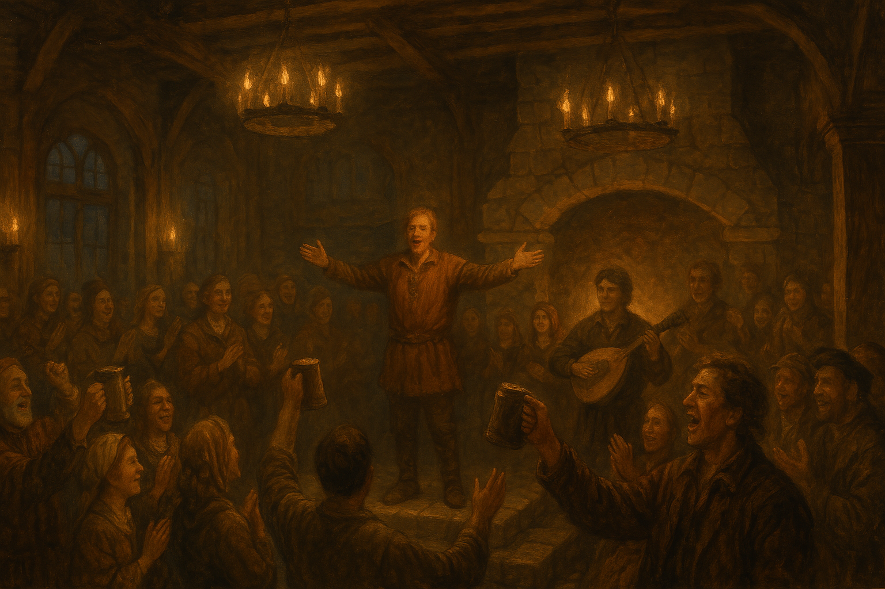

Chapter 6: Heroes of Vowalon
Curse of Vowalon


Curse of Vowalon
15048.07.22
穿越危險的嚎叫森林，台北市議員終於成功帶著大法師葛蘭倫回到了沃瓦倫鎮。
幾名冒險者先行前往道金的店，取回格拉罕為他們特製的武器。其餘幾位冒險者則帶著葛蘭倫前往寂靜殿尋找寇頓神父。葛蘭倫留下來和寇頓神父討論隔日驅除詛咒儀式的細節。米多莉則自行前往了鎮長家，想見見鎮長夫人潔絲敏。
在寂靜殿聽說了潔絲敏失蹤一事後，眾人一起來到了鎮長家，試圖安撫狀況欠佳的鎮長。也因為潔絲敏沒有留下大家簽下的契約書，在幾度商討後，鎮長給了冒險者們一人300枚金幣作為獎賞。大家說好了要在找回潔絲敏後將賞金多退少補。
據戴洛鎮長所述，潔絲敏在兩日前早上六、七點出了門，要去寂靜殿，卻從此消失了蹤影。寇頓神父也未曾見到潔絲敏踏入殿內。這讓戴洛鎮長想起了當時他們的兒子山米克失蹤的事件。
大家也去了一趟勞迪俱樂部，布魯斯正在準備今晚的派對，慶祝台北市議員成功將大法師葛蘭倫帶回沃瓦倫。眼看沃瓦倫的詛咒就要終結了，鎮民們都十分期待。冒險者們打聽了潔絲敏消失一事，以及關於毒三明治的各種消息。他們從一名鎮民班尼的口中了解了沃瓦倫組成了一支搜救隊，四處尋找潔絲敏，卻完全沒有任何線索。班尼對此十分自責，但也相信著潔思敏一定還活著。而關於毒三明治一事，則是沒有任何線索。
日落前，台北市議員分頭去了巴姆的雜貨店和道金的店，購買了一些日常用品以及裝甲。
日落後，全鎮的人們都來到了勞迪俱樂部慶祝，只有寇頓神父和葛蘭倫大法師留在寂靜殿討論明日的儀式。今晚所有的餐點都是布魯斯請客。
一位奇異的男子出現在冒險者們的眼前，自稱YHWH，是Tai Tai我還要的老師。兩人相談甚歡，不過Tai Tai我還要下了決心，要皈依拉索斯教，於是YHWH便帶著Tai Tai我還要往寂靜殿走去。寇頓神父和他們表示好好享受今晚的派對，結束後再回來就可以了。
酒館內，鎮民們高聲呼喊著「沃瓦倫的英雄」，慶賀冒險者們的歸來，而冒險者們也分享著自己在路途中遇到的各種事件，現場非常熱鬧。
派對內，兩名年輕的女子，費歐娜和艾瑪使盡了力氣，向年輕帥氣的帕拉丁示好。他們一直都很想嫁給一名冒險者，而這也是他們這輩子與「英雄」最接近的一刻了。YHWH順勢變出了三枚戒指給他們，薩梅爾也奏了一曲《結婚進行曲》炒熱氣氛。帕拉丁對於突如其來的狀況難以招架，氣氛有些尷尬。眼看帕拉丁的反應，費歐娜傷心地奔向了門外，消失在夜色之中。YHWH、Tai Tai我還要，以及烏柯也跑出了門外，想去尋找費歐娜，卻找不到他。而為了解決眼前的困窘，帕拉丁承諾艾瑪，未來等他回到沃瓦倫後，再看看兩人之間怎麼辦。看著好戲沒了，大夥兒才一哄而散，繼續享受各自的派對。
店外，YHWH因為剛剛施展的法術，觸發了自身的特殊體質，而不小心向四周射出了魔法飛彈，擊中了勞迪俱樂部的窗戶。布魯斯叫罵了一聲，但想起今晚是大家開心的日子，便索性不管了。
布魯斯向烏犧奧泥提起了沃瓦倫的腕力常勝軍班尼，邀請兩位來一場腕力比賽。班尼拔下了自己手上的金戒指作為賭注，而烏犧奧泥則以自己的戰斧作為賭注。兩人互相看著對方的雙眼，一個瞬間，班尼竟然軟手了，他大笑著自己喝多了，大方地把自己的金戒指送給了烏犧奧泥。戒指上刻著矮人語的「以家族之名」與「寇茲羅薩姆達」，那是班尼的家族姓氏。烏犧奧泥便把戒指戴上了自己的左手無名指，作為自己勝利的徽記。
幾名鎮民邀請薩梅爾彈奏他的魯特琴，薩梅爾以台北市議員大戰狼群的故事即興彈唱了一首曲子，鎮民們卻似乎覺得普普通通。
米多莉不知不覺中離開了勞迪俱樂部，在鎮上探索，卻因為周圍太過漆黑而什麼都看不見。
深夜，鎮民們紛紛離開了勞迪俱樂部，冒險者們只剩下Tai Tai 我還要還清醒著，自己回去了寂靜殿，其他的冒險者們則花了點時間，爛醉地回到了夜夢者，不過連夜夢者的老闆娘克萊門汀也醉了，他從抽屜抓出了一大把鑰匙讓冒險者們自行挑選。等到米多莉回來時，也從櫃檯隨意抓了一支鑰匙。
這一晚並不平靜。冒險者們都做了噩夢，不過只有幾位記得夢境的內容。
帕拉丁夢見了過去他所居住的村莊內教導他武術的師父將劍插入了自己的胸前，流出了黑色的血液。
烏柯夢見了自己在森林內追逐著野生動物，回首時卻發現那隻動物只剩下骨頭，潔白的讓人不寒而慄。
烏犧奧泥夢見了在卓茲克的宅邸，頭痛欲裂的他腦中冒出了聽不懂的語言，以及「復仇」的字。
薩梅爾夢見了自己正在用魯特琴彈奏給路人聽，一回神卻發現路人和自己的琴都變成了骷髏，彈奏的指尖破了皮，全是鮮血。
米多莉夢見了自己過去的神父領著他走出教堂外，轉眼間，背後純白的教堂變成黑色，且開始崩塌，壓死了微笑著的神父和他自己。
眾人從夢中驚醒時，天，已經亮了。
15048.07.22
Across the dangerous Howling Forest, the Taipei City Council finally brought the archmage Grenland back to Vowalon.
Several adventurers visited Dawkin's Shop, to retrieve the weapons that Graham enhanced for them. The other adventurers sent Grenland to the Temple of Silencio to seek Father Kaulton. Grenland stayed at the temple to discuss the details of the ritual to lift the curse tomorrow with Father Kaulton. Midori visited the mayor's house alone, wanting to see Jasmine.
After learning that Jasmine went lost, the group left the temple and visited the mayor's house, attempting to comfort the mayor, who is in a poor condition. Also, due to the fact that Jasmine didn't leave the contract that the party signed, after some discussio, the mayor decided to pay every adventurer 300 gold pieces each as a reward. They all had an agreement to refund for overpayment, and pay additional for underpayment after rescuing Jasmine.
According to Mayor Daryl, Jasmine went out around 6 or 7 o'clock in the morning two days ago for the temple, but was never seen again. Father Kaulton didn't see her enter the temple, either. This reminded Mayor Daryl of the disappearance of their child, Sammick.
The party also went to the Rowdy's Club. Bruce was preparing for the party tonight, to celebrate the Taipei City Council brining back the archmage Grenland back to Vowalon. Knowing that the curse of Vowalon was coming to an end, the townfolks were very excited. The adventurers tried to gather information on the disappearance of Jasmine, and also that on the poisoned sandwich. They heard from Benny, a local townfolk, that the townfolks assembled a rescue team, trying to look for Jasmine, but was clueless. Benny was very guilty, but also believed that Jasmine was still alive. However, there was nothing new about the poisoned sandwich.
Before sunset, the Taipei City Council went to Bamu's Groceries and Dawkin's Shop seperately, bought some groceries and armors.
After sunset, the whole village came to Rowdy's Club to celebrate, leaving Father Kaulton and Grenland the Archmage at the temple to discuss on the ritual tomorrow. All the meals were on the house that night.
A mysterious man showed up in front of the adventurers, claiming himself YHWH, a teacher of Tai Tai Wo Hai Yao. The two had a very pleasant conversation. However, Tai Tai had made his decision to join the Laxthos, so YHWH took Tai Tai to the temple. Father Kaulton told them to enjoy the night, and come back after the party.
In the tavern, townfolks yelled "the Heroes of Vowalon", celebrating the return of the adventurers. The adventurers also shared the events on their trip. The scene was very lively.
In the party, two young girls, Fiona and Emma tried their best to flirt with the young and handsome Paladin. They've always wanted to marry an adventurer, and this was the closest chance they were near a "hero". YHWH conjured three rings for them, while Samael played the Wedding March. Paladin was awkward towards this sudden event. Seeing Paladin's reaction, Fiona ran out into the night crying. YHWH, Tai Tai and Uko followed her out, but couldn't find her. To solve the immediate awkwardness, Paladin promised Emma that he'd consider their future when he comes back to Vowalon in the future. Seeing there was no more drama, the people dispersed and continued to enjoy the party.
Outside the tavern, due to the spell that YHWH casted, his special condition was triggered, and several magic missiles were accidently fired, hitting the window of the tavern. Bruce yelled, but since it was a night to be happy with, he chose to ignore it.
Bruce told Usioni about the reigning wrestling champion, Benny, and invited them for a game. Benny took off a golden ring from his finger as a bet, while Usioni used his battle axe as his bet. The two looked into their eyes. In a sudden, Benny gave in, laughing, saying that he drank too much. He handed out his golden ring for Usioni. Dwarvish words of "In the Name of Family" and "Cozlothramuda", which was Benny's family name, was carved on the ring. Usioni took the ring and put it on his left index finger as a trophy.
Several townfolks invived Samael to play his lute. Samael played a song about the Taipei City Councilor fighting the wolf pack, but the townfolks seemed uninterested.
Midori left the tavern, wandering in the town, but couldn't see much due to the darkness.
In the midnight, the townfolks left the Rowdy's Club, and Tai Tai Wo Hai Yao remained the only sober member in the party. He walked to the temple on his own, while the others took some time wandering back to the Night Dreamers. However, Clementine, the owner of the Night Dreamers was also drunk. She grabbed all the keys for the adventurers to pick. When Midori returned, she also took a key on her own.
The night was not peaceful at all. All the adventurers had nightmares, but only some of them remembered their dream.
Paladin saw his master in his hometown who taught him how to fight, pushing a swords into his own chest. Black blood flowed out.
Uko saw himself chasing animals in the woods, but only seeing the skulls of the animals in chilling white.
Usioni saw himself in the house of Drogskol, hearing unrecognizable languages, and also "revenge".
Samael saw himself playing lute to bypassers, but then seeing his lute and all the bypassers turned into skeletons, while the skins of his fingertips shed blood.
Midori saw her bishop leading her out of the church. In a sudden, the white church turned black, collapsed, crashing her and the bishop dead.
When the party woke up in horror, it was already morning.